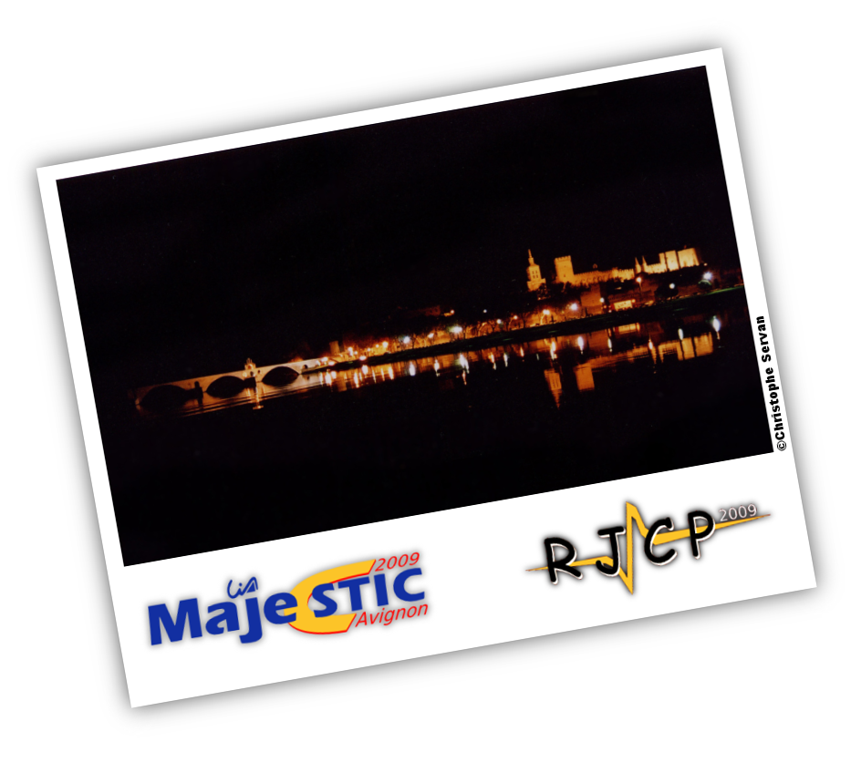

[
MajecSTIC 2009
] - [
RJCP 2009
]
L'Université d'Avignon et des Pays de Vaucluse (UAPV)
L'école doctorale Information Structures Systèmes (I2S)
Le Laboratoire Informatique d'Avignon (LIA)
Le Laboratoire Culture et Communication (LCC)
Le Centre d'Initiation à l'Enseignement Supérieur Provence Côte d'Azur Corse (CIES)
L'association Non Permanents du Laboratoire Informatique d'Avignon (NP-LIA)
La Mairie d'Avignon
L'Association Francophone de la Communication Parlée (AFCP)
La Région Provence Alpes Côtes d'Azur
Le projet ANR RPM2 - Résumé Plurimédia, Multi-documents et Multi-opinions
Projet ANR ASH - Attelage de Systèmes Hétérogènes
Le projet ANR AVISON - Indexation multilingue de documents audiovisuels
L'Association des Doctorants et Docteurs du LSIS (A2DL)
Les Incubateurs en Provence Alpes Côte d'Azur